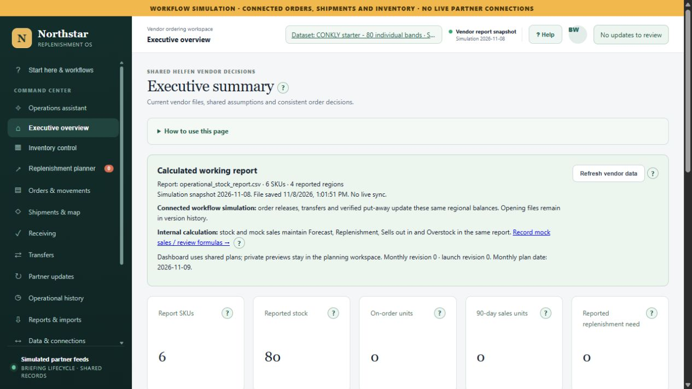
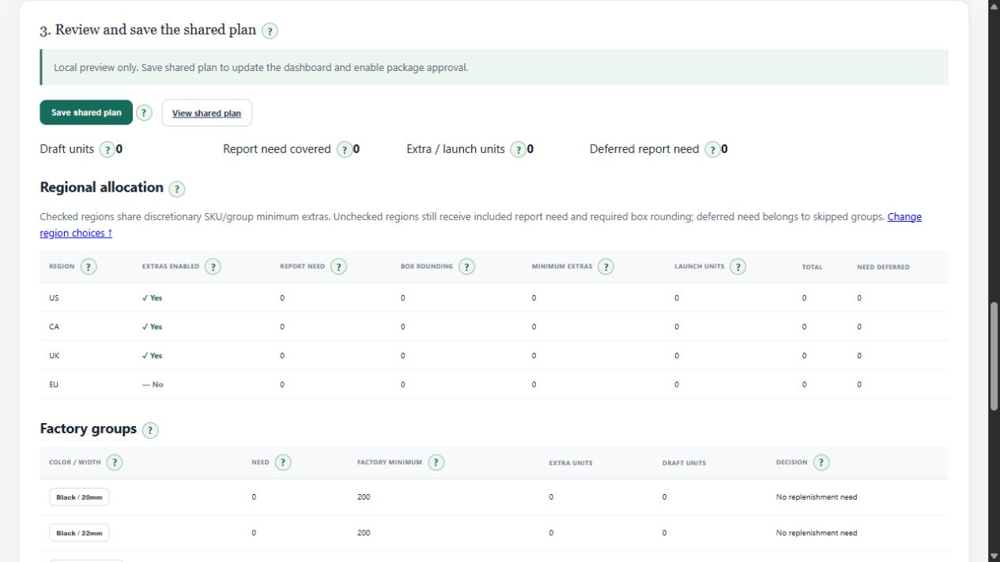
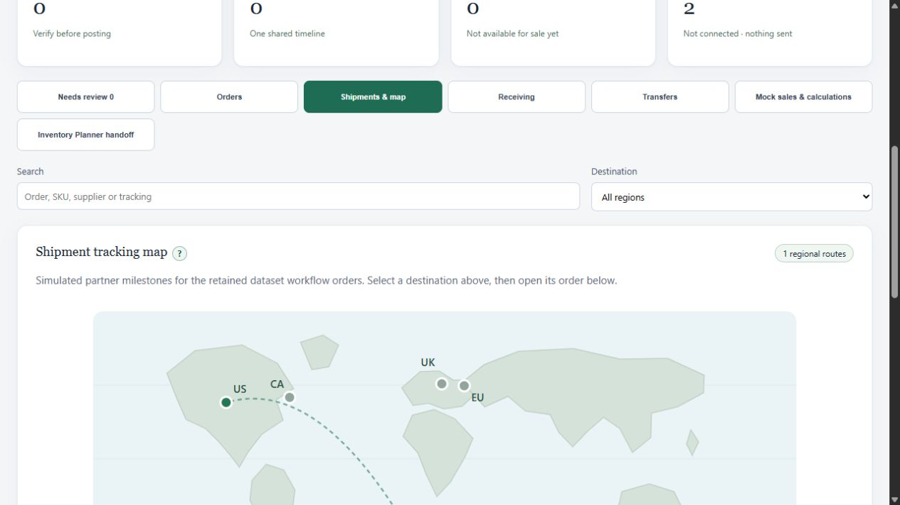
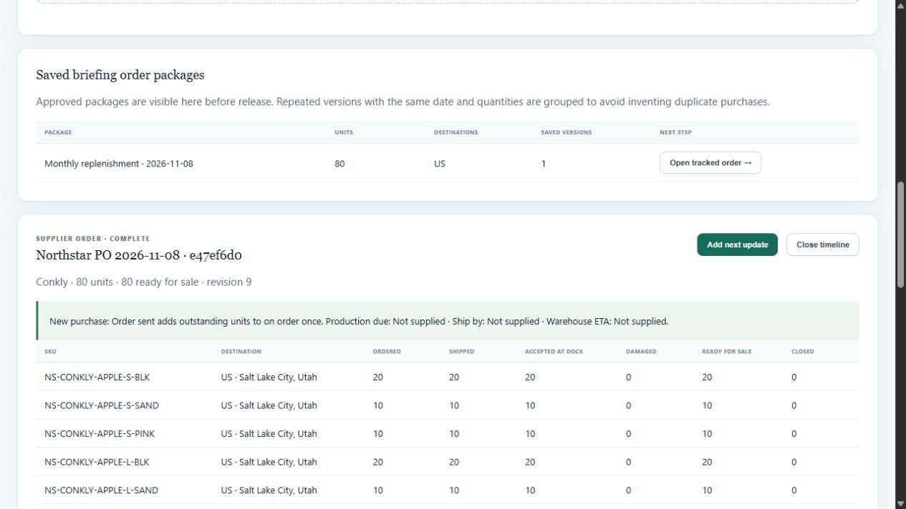
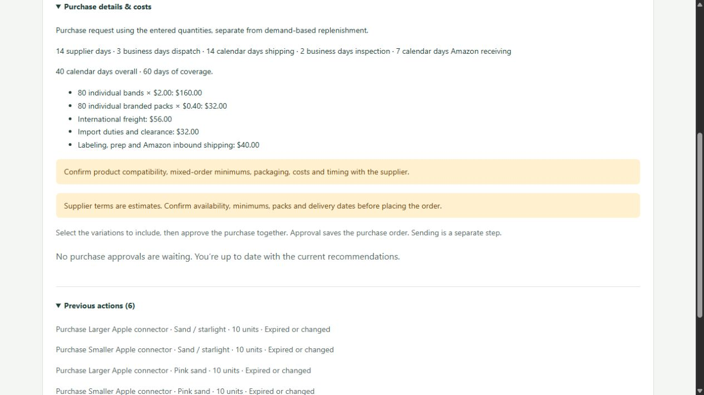

In development · Connected operations & AI
Northstar Control Tower
A working inventory and operations application connecting demand, planning, reviewed purchases, supplier progress, shipments, receiving, put-away, and reconciliation. An AI operations assistant helps inspect the work and prepare the next step.
- Role
- Product designer, data modeler, and application developer
- Platform
- JavaScript, Python, SQLite, and AI integration
- Current stage
- Connected local application with test partner feeds
- Public demo
- Full application tour with fictional sample records

Project evolution
From replenishment planning to connected operations.
Northstar grew from my Multichannel Replenishment Control Tower: a prototype for connecting demand, inventory, purchasing, and receiving decisions. As the work developed, I began connecting those decisions into a shared operating workflow.
The current application carries saved orders through tracking, receiving, and inventory updates. An operations assistant adds a way to ask questions, inspect supporting records, and prepare supported next steps.
This is how I learn: build around a practical problem, test the workflow, refine it, and use what I learn to explore what could come next.
The complete operating workflow
From demand and inventory to stock ready for sale.
The control tower connects decisions that are often separated across reports, order files, shipment updates, and warehouse checks. Executive summary, Inventory control, shared plans, and Orders & movements use the same working records.
- Understand the need. Inspect product/region stock, inbound, demand, coverage, and purchasing-group calculations.
- Prepare the plan. Preview monthly replenishment or an initial launch; review minimums, pack rounding, regional choices, and launch alternatives.
- Approve an exact package. Save the shared revision, inspect the four matching files, and approve against its retained inputs and settings.
- Follow the order. Connect supplier acknowledgement, production, shipment milestones, maps, and source updates to its timeline.
- Verify and put away. Review accepted and damaged quantities, then confirm ready-for-sale stock separately from the warehouse count.
- Close the loop. Retain the resulting report version, movement history, and reconciliation handoff. Recalculate report fields when internal calculations are enabled.
The current Conkly order is complete: 80 individual bands, with 20/10/10 units for each connector family. Its timeline retains the separate receipt and ready-for-sale milestones. Inventory and the assistant now show 80 units in stock and zero on order.
Across the whole application
The main decisions, and the tools around them.
- Inventory and planning: executive overview, searchable positions, calculation details, monthly ordering, initial launch, regional allocation, and retained approval packages. Explore planning →
- Operational execution: order timelines, supplier/carrier updates, shipment maps, receiving, discrepancies, put-away, and protected warehouse transfers. Follow the operation →
- Data and control: separate datasets, source versions, reports and exports, validated imports, internal calculations, reconciliation, connection status, operational history, and contextual help. Explore supporting tools →
- AI and business settings: the operations briefing, scoped questions and evidence, reviewed action batches, grouped activity, sourcing, planning times, notification preferences, and vendor/product controls. Explore the assistant →
The five-chapter tour covers the complete application. It spends more time on consequential decisions and the assistant, with shorter stops for smaller tools.
AI integration
An assistant grounded in the work.
The assistant is one part of the wider operations system. It summarizes the selected workspace, explains supporting records, runs bounded application checks, and prepares supported next steps. The existing engine supplies purchasing quantities.
- Review the evidence. Explain records and flag issues using the selected workspace’s supporting information.
- Prepare a next step. Run supported checks and prepare actions while the existing planning engine supplies purchasing quantities.
- Keep approval explicit. Selection, inspection, and execution stay separate. Quantities, destinations, source/timing, consequences, and warnings remain visible beside approval. The assistant cannot approve its own proposals.
- Follow the outcome. Group recent progress by order or batch, with the retained timeline and audit evidence available on request.
- Keep working through failures. Deterministic planning and operational records remain useful when live AI is unavailable; missing evidence is not presented as a known zero.
What I’m learning
Useful automation needs context and clear controls.
The interesting challenge is making AI useful inside a workflow people can understand and trust. That means showing where an answer came from, preserving business rules, checking whether information has changed, and making the approval and outcome visible.
Current development stage: The selected workspace uses temporary records and simulated partner events. Supplier, carrier, warehouse, Amazon, and upstream connections are not established by these records. Every tour image was captured directly from the newest running BNT app. Its assistant reports available; no AI question, purchase approval, receipt, or put-away was submitted to create the captures.
Current application
Inspect the decision. Follow its effect.
Four stops from the full 47-stop tour, all captured directly from the current app. Conkly is the only active existing dataset; older sources are archived and disconnected.




Portfolio note